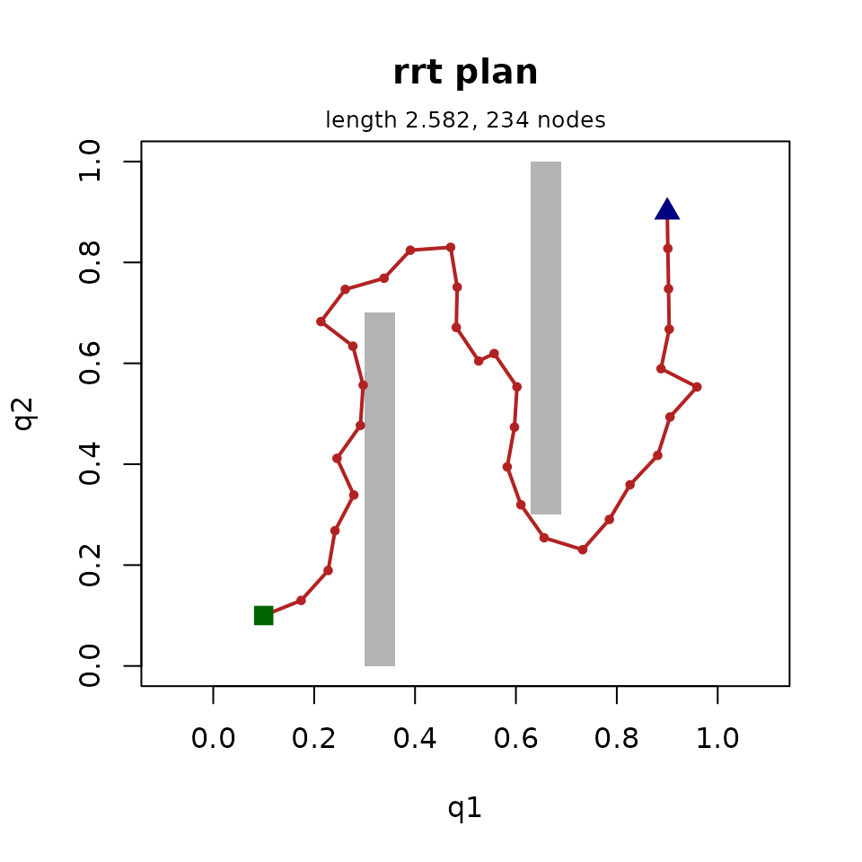
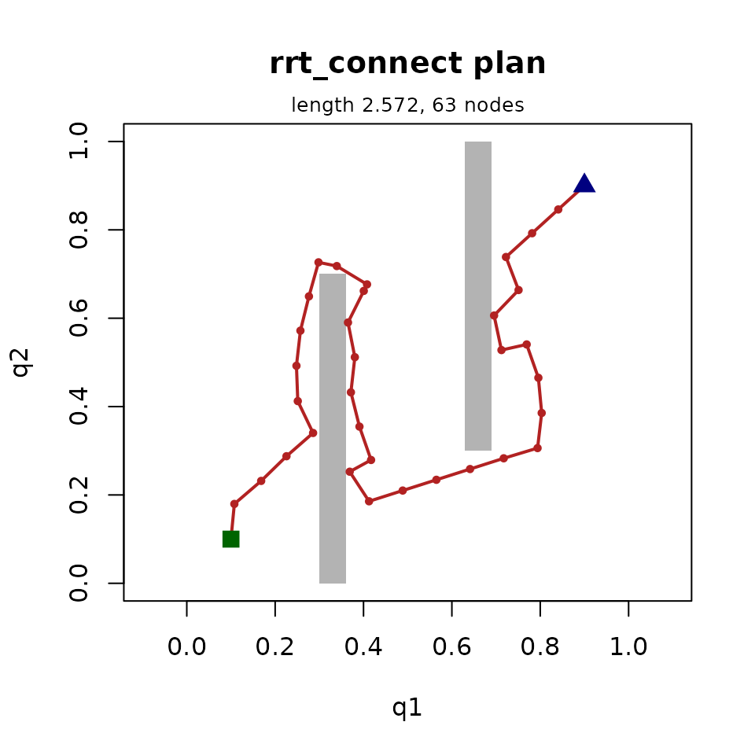
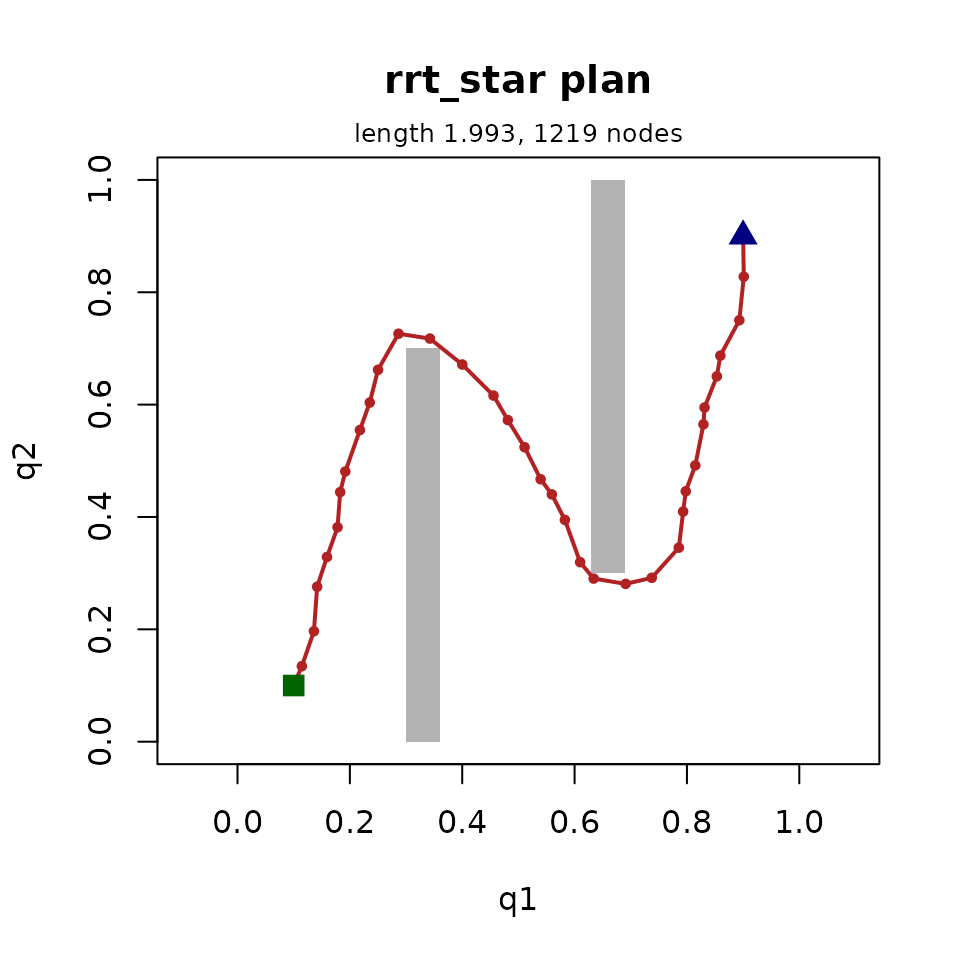
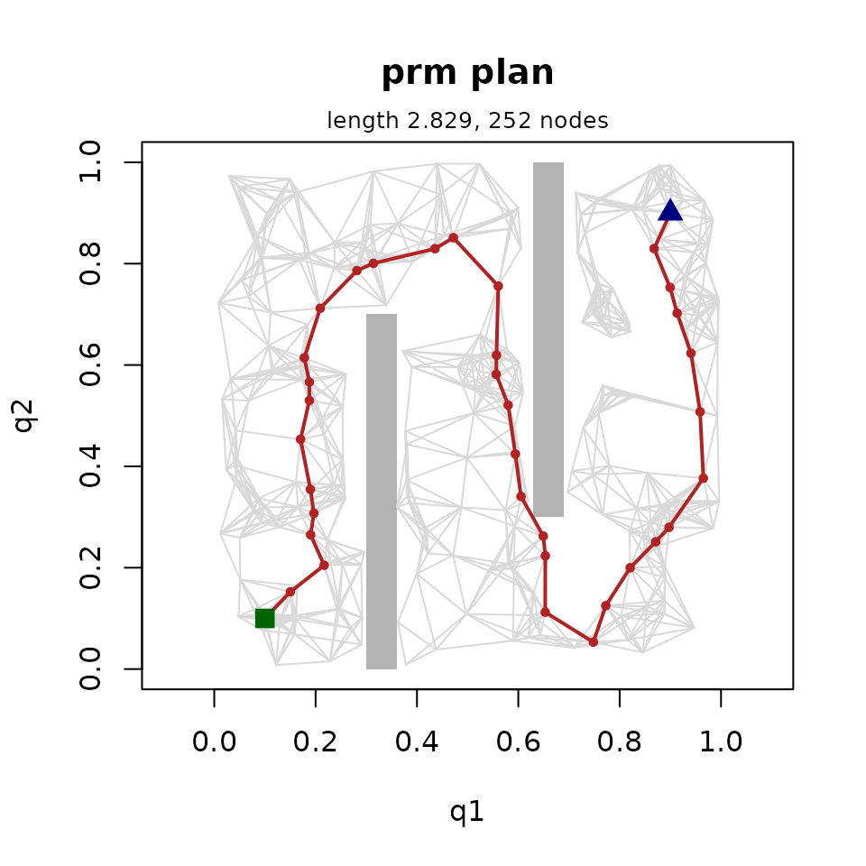

Collision checking and motion planning
Source:vignettes/collision-planning.Rmd
collision-planning.RmdGeometry and distances
Collision primitives are convex: spheres, boxes, cylinders, capsules and convex hulls of points. Each is represented internally as a core shape plus a radius, so a capsule is a segment swept by a sphere.
geom_distance() returns the separation distance and
witness points. Sphere and capsule pairs use closed-form segment
distances (exact depth when they overlap). Other pairs use the Gilbert,
Johnson and Keerthi (GJK) algorithm on support functions. When the cores
of a GJK pair overlap, the expanding polytope algorithm (EPA) grows a
polytope inside the Minkowski difference A -
B until its face nearest the origin is part of the boundary; the
distance to that face is the penetration depth, the length of the
shortest translation that separates the shapes. Negative distances are
therefore always exact depths.
geom_distance(geom_sphere(0.5), geom_sphere(0.3), robot_pose(), transl(2, 0, 0))$distance
#> [1] 1.2
d <- geom_distance(geom_box(c(1, 1, 1)), geom_sphere(0.2), robot_pose(), transl(1.5, 1.5, 0))
c(d$distance, sqrt(2) - 0.2)
#> [1] 1.214214 1.214214
d$point_a
#> [1] 0.5 0.5 0.0
geom_distance(geom_box(c(1, 1, 1)), geom_box(c(1, 1, 1)), robot_pose(), transl(0.5, 0, 0))$distance
#> [1] -0.5
# Two unit cubes, one turned 45 degrees: depth 0.5 + sqrt(2) / 2 - 0.9.
geom_distance(geom_box(c(1, 1, 1)), geom_box(c(1, 1, 1)), robot_pose(),
robot_pose(rotz(pi / 4), c(0.9, 0, 0)))$distance
#> [1] -0.3071068
0.9 - 0.5 - sqrt(2) / 2
#> [1] -0.3071068Mesh geometry from URDF files is kept for reference but is not collidable.
Robots in an environment
Attach geometry to links with robot_attach_geometry(),
or wrap every DH link in a capsule with
robot_capsule_links(). Obstacles are geometries with world
poses.
arm <- robot_capsule_links(robot_example("planar2"), radius = 0.05)
env <- robot_environment(
block = geom_box(c(0.4, 0.4, 0.4), origin = transl(1.5, 0, 0)),
post = geom_cylinder(0.1, 1, origin = transl(-1, 1, 0))
)
robot_check_collision(arm, c(0, 0), env)
#> <robot_collision_result> IN COLLISION; 1 pair evaluated, min distance -0.25
#> object_a object_b type distance collision
#> link2 block environment -0.25 TRUE
robot_check_collision(arm, c(pi / 2, 0), env, distances = TRUE)
#> <robot_collision_result> collision free; 4 pairs evaluated, min distance 0.85Self-collision checks skip links that share a joint (they always
touch at the joint) and any pairs listed in
ignore_pairs.
arm3 <- robot_capsule_links(robot_example("planar3"), 0.05)
robot_check_collision(arm3, c(0, 3, 3))$in_collision
#> [1] TRUEPaths and the resolution caveat
robot_check_path() interpolates each segment in joint
space with steps no larger than resolution and checks every
sample. Both endpoints below are free, yet the straight joint space path
sweeps through the block:
res <- robot_check_path(arm, rbind(c(pi / 2, 0), c(-pi / 2, 0)), env)
res$valid
#> [1] FALSE
res$q
#> [1] 0.1789515 0.0000000This is a discrete check. A thin obstacle can slip between samples if the resolution is coarse relative to the obstacle size and the link lengths.
Continuous checking
method = "continuous" removes that caveat with
conservative advancement. At the current configuration it computes the
clearance d of every geometry pair and
a bound M on how far any point of the
pair can move per unit of the segment parameter. For a revolute joint, a
point at distance r from the joint axis
moves at most r per radian, and r is bounded by the fixed frame offsets of
the chain plus the size of the geometry. Moving by d / M cannot cause contact, so the check
steps forward by that amount until it either reaches the end of the
segment or a clearance reaches zero.
Here a thin post sits between two samples of a coarse discrete check:
post <- robot_environment(post = geom_box(c(0.02, 0.02, 1), origin = transl(cos(0.6), sin(0.6), 0)))
P <- rbind(c(0, 0), c(1.2, 0))
robot_check_path(arm, P, post, resolution = 0.5)$valid
#> [1] TRUE
cc <- robot_check_path(arm, P, post, method = "continuous")
cc$valid
#> [1] FALSE
cc$q
#> [1] 0.5362514 0.0000000
robot_check_collision(arm, cc$q, post)$min_distance
#> [1] 8.367652e-10The configuration returned is the first contact along the motion, up
to the tolerance tol.
Sampling-based planners
robot_planner() sets up a planner;
robot_plan() runs it.
| Algorithm | Idea | Notes |
|---|---|---|
"rrt" |
Grow a tree toward random samples, with goal bias | Fast, paths are jagged |
"rrt_connect" |
Two trees that greedily try to meet | Usually fastest for single queries |
"rrt_star" |
RRT with rewiring in a shrinking radius | Improves cost as samples increase |
"prm" |
Roadmap of random free samples, queried with Dijkstra | Reusable for many queries |
planner <- robot_planner(arm, "rrt_connect", env, step_size = 0.3)
plan <- robot_plan(planner, start = c(-0.8, 0), goal = c(0.8, 0), seed = 1)
plan
#> <robot_plan> rrt_connect: success
#> path found
#> 24 waypoints, length 6.671, 67 nodes, 97 iterations, 1.16 s
#> seed: 1
robot_check_path(arm, plan$path, env, resolution = 0.01)$valid
#> [1] TRUE
short <- robot_shortcut(plan, seed = 1)
c(original = plan$length, shortcut = short$length)
#> original shortcut
#> 6.671026 4.919281A failure only means that no path was found within the budget:
blocked <- robot_planner(validity = function(q) abs(q[1] - 0.5) > 0.05,
bounds = rbind(c(0, 1), c(0, 1)), max_iterations = 200)
robot_plan(blocked, c(0.1, 0.1), c(0.9, 0.1), seed = 1)$message
#> [1] "no path found within the iteration budget (this does not prove that none exists)"Planning without a robot model
A validity function and bounds define any
configuration space. This makes the planners easy to study on 2D
examples:
walls <- function(q) {
!(abs(q[1] - 0.33) < 0.03 && q[2] < 0.7) && !(abs(q[1] - 0.66) < 0.03 && q[2] > 0.3)
}
draw <- function() {
rect(0.30, 0, 0.36, 0.7, col = "grey70", border = NA)
rect(0.63, 0.3, 0.69, 1, col = "grey70", border = NA)
}
box <- rbind(c(0, 1), c(0, 1))
for (alg in c("rrt", "rrt_connect", "rrt_star", "prm")) {
pl <- robot_planner(validity = walls, bounds = box, algorithm = alg,
step_size = 0.08, resolution = 0.005,
max_iterations = 1500, prm_nodes = 250)
p <- robot_plan(pl, c(0.1, 0.1), c(0.9, 0.9), seed = 3)
plot(p, obstacles = draw)
mtext(sprintf("length %.3f, %d nodes", p$length, p$nodes), side = 3, line = 0.2, cex = 0.8)
}



Practical advice
- Keep
resolutionbelow the smallest obstacle feature, in joint units. - Use
seedfor reproducible results; the global random state is restored. - RRT* converges to optimal paths only as samples grow without bound.
Use
robot_shortcut()for a quick improvement of any planner’s output. - Planning runs in R and calls the collision checker many times. Expect seconds for 2 to 6 DOF problems with simple geometry.